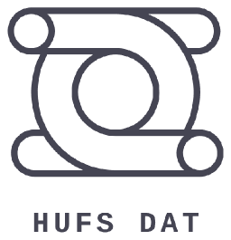

01
정기 세션·논문 리뷰
논문 발표와 과제 리뷰로 데이터 분석·AI의 접근 방법을 익힙니다. 공개된 학기 일정에는 팀별 프로젝트 진행 보고와 중간발표가 포함돼 있습니다.

DAT는 Data Analysis & Technology의 약자로, 한국외국어대학교에서 데이터 분석·데이터사이언스·AI를 함께 공부하는 학회입니다. 2023년 1기 활동을 시작했으며, 정기 세션과 학기 단위 프로젝트를 중심으로 학습을 이어갑니다.
정기 세션에서는 논문과 과제를 리뷰하고, 팀 프로젝트의 진행 상황과 중간 결과를 공유합니다. 학기 말 캡스톤 발표까지 분석을 발전시키며, 다른 학회와의 연합 세미나·외부 학술제·멘토 특강으로 교류와 진로 탐색의 기회를 넓힙니다.
공개된 8기 중간발표에서는 공정 데이터의 인과관계, 기업 부실 예측, 상권 추천, LLM을 활용한 여론 분석, 대중교통 혼잡 등 다양한 주제를 다뤘습니다. 결과뿐 아니라 분석의 한계와 추가 검증이 필요한 질문도 함께 공유했습니다.
논문 발표와 과제 리뷰로 데이터 분석·AI의 접근 방법을 익힙니다. 공개된 학기 일정에는 팀별 프로젝트 진행 보고와 중간발표가 포함돼 있습니다.
한 학기 동안 팀 프로젝트를 진행하고 최종 발표로 결과를 공유합니다. 최근 중간발표에서는 금융·상권·공정·교통 등 서로 다른 문제에 분석 방법을 적용한 과정을 나눴습니다.
다른 학회와의 연합 세미나와 외부 학술제에 참여합니다. 박람회 방문과 학회원 교류 활동도 함께 운영합니다.
멘토 특강을 통해 데이터 분야의 진로와 경험을 접하고, 개별 스터디로 관심 주제를 공부합니다. 공식 인스타그램에서 멘토 특강과 행사 소식을 확인할 수 있습니다.
모집 일정과 지원 절차는 기수별 공식 공고에서 확인할 수 있습니다. 공식 인스타그램은 산학협력·외부 문의를 DM으로 안내하고 있습니다.